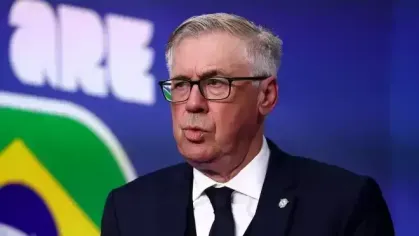

Efeito Ancelotti
A contratação de Carlo Ancelotti em maio de 2025 foi recebida pelo povo brasileiro com uma mistura de euforia e alívio, sendo encarada como a salvação para o ciclo mais turbulento da história recente da Seleção. Após anos de instabilidade e comandos interinos na CBF, a chegada do técnico multicampeão pelo Real Madrid gerou a expectativa de que o Brasil finalmente ganharia uma organização tática de nível europeu, capaz de potencializar talentos como Vinícius Júnior e Rodrygo. Os torcedores e a imprensa acreditavam que a enorme capacidade de gestão de elenco e o currículo vitorioso do italiano seriam os fatores determinantes para resgatar a mentalidade vencedora do grupo e blindar os jogadores do ambiente de crise externa, consolidando o favoritismo rumo ao hexacampeonato em 2026.

Ancelotti admite ansiedade da Seleção em empate e assume: "Não começamos bem"
O treinador Carlo Ancelotti disse que o Brasil não começou bem o jogo contra Marrocos, que terminou empatado em 1 a 1, neste sábado, na estreia da Seleção na Copa do Mundo de 2026. Em Nova Jersey, a equipe saiu atrás no placar com gol de Saibiri, mas empatou em golaço de Vini Jr ainda no primeiro tempo. O técnico italiano disse que o time estava ansioso.